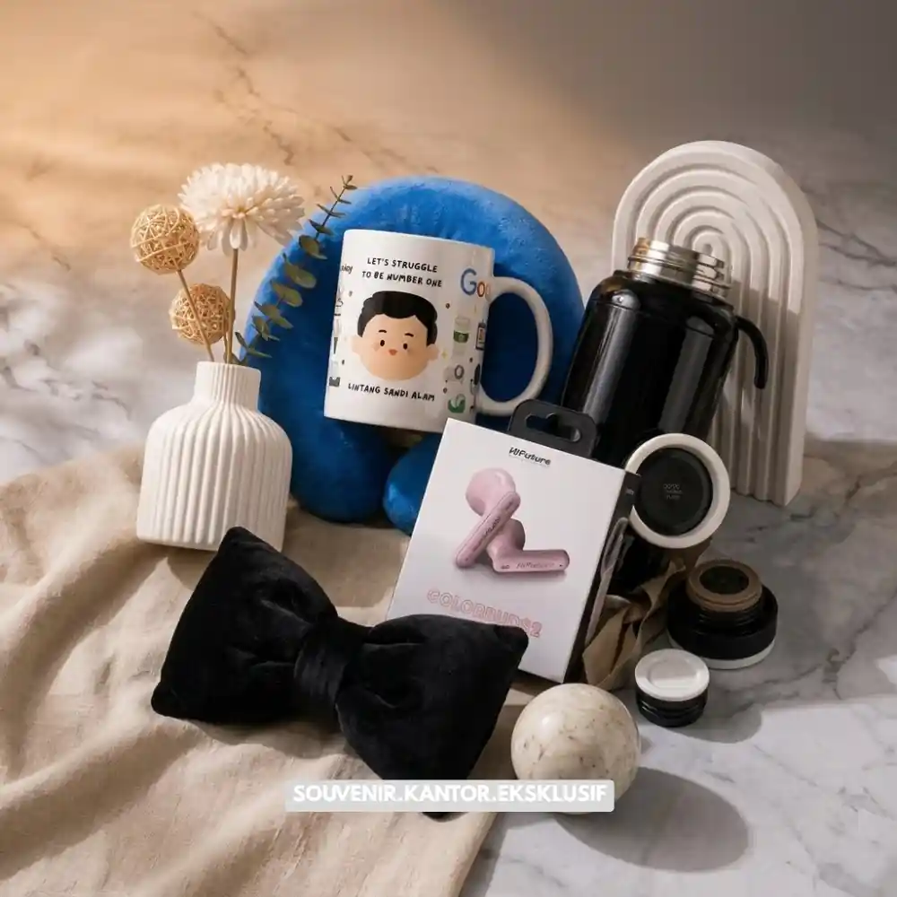

Daftar Isi
Momen tepat mengirim hampers kantor kepada klien dan karyawan meliputi akhir tahun, hari raya keagamaan, ulang tahun perusahaan, serta pencapaian kerja sama bisnis yang signifikan.
- Setiap momen pengiriman hampers membawa pesan apresiasi yang berbeda kepada penerima.
- Hampers akhir tahun dan hari raya menjadi momen paling umum digunakan perusahaan.
- Momen internal seperti ulang tahun perusahaan juga relevan untuk apresiasi karyawan.
- Ketepatan waktu pengiriman turut memengaruhi kesan yang diterima oleh klien maupun karyawan.
Banyak perusahaan sudah memahami pentingnya memberikan hampers kepada klien maupun karyawan, namun sering kali bingung menentukan momen yang paling tepat agar pesan apresiasi tersampaikan secara maksimal.
Momen pengiriman hampers yang tepat dapat memperkuat kesan personal dan profesional, sementara momen yang kurang sesuai justru berisiko membuat hadiah terkesan formalitas semata.
Secara umum, momen pengiriman hampers kantor dapat dikelompokkan menjadi momen tahunan yang bersifat rutin, momen keagamaan, serta momen khusus yang berkaitan dengan pencapaian bisnis tertentu.
Kapan Waktu yang Tepat Mengirim Hampers Kepada Klien
Waktu yang tepat mengirim hampers kepada klien umumnya bertepatan dengan akhir tahun, hari raya keagamaan, atau momen pencapaian kerja sama bisnis seperti perpanjangan kontrak.
Momen Akhir Tahun
Akhir tahun menjadi momen paling umum digunakan perusahaan untuk mengirimkan hampers kepada klien sebagai bentuk apresiasi atas kerja sama sepanjang tahun berjalan. Momen ini juga sering dimanfaatkan untuk mempererat hubungan menjelang tahun berikutnya.
Hari Raya Keagamaan
Hari raya keagamaan seperti Idulfitri turut menjadi momen populer untuk mengirim hampers, karena membawa nuansa kehangatan dan silaturahmi yang relevan dengan budaya bisnis di Indonesia.
Pencapaian Kerja Sama Bisnis
Momen seperti penandatanganan kontrak baru, perpanjangan kerja sama, atau pencapaian target bersama juga menjadi kesempatan yang tepat untuk mengirimkan hampers sebagai bentuk penghargaan atas kepercayaan yang diberikan klien.

Exclusive Souvenir Warm Greeting Set
Apakah Ada Momen Khusus untuk Mengirim Hampers Kepada Karyawan
Momen khusus untuk mengirim hampers kepada karyawan meliputi ulang tahun perusahaan, pencapaian target kerja, serta hari raya sebagai bentuk apresiasi internal atas kontribusi karyawan.
Ulang tahun perusahaan sering menjadi momen yang tepat untuk memberikan hampers kepada seluruh karyawan sebagai bentuk rasa syukur bersama atas perjalanan perusahaan.
Selain itu, pencapaian target kerja tim atau divisi tertentu juga dapat menjadi momen relevan untuk memberikan apresiasi berupa hampers, sebagai bentuk pengakuan atas kerja keras yang telah dilakukan.
Hari raya keagamaan turut menjadi momen umum untuk memberikan hampers kepada karyawan, sejalan dengan tradisi berbagi yang sudah menjadi bagian dari budaya kerja di banyak perusahaan Indonesia.
Bagaimana Menyesuaikan Tema Hampers dengan Momen Pengiriman
Tema hampers sebaiknya disesuaikan dengan nuansa momen pengiriman, misalnya nuansa hangat untuk hari raya, nuansa formal untuk klien korporat, dan nuansa apresiatif untuk pencapaian internal.
Untuk momen hari raya, tema hampers biasanya menonjolkan nuansa hangat dan penuh kebersamaan, dengan pilihan produk yang identik dengan momen tersebut.
Sementara untuk klien korporat pada momen formal seperti perpanjangan kontrak, tema hampers sebaiknya lebih menonjolkan kesan eksklusif dan profesional melalui pemilihan produk serta kemasan yang lebih premium.
Untuk momen internal seperti apresiasi pencapaian karyawan, tema hampers dapat disesuaikan dengan nilai-nilai perusahaan, misalnya menonjolkan semangat kolaborasi atau pencapaian bersama melalui pesan pada kartu ucapan yang menyertai hampers.

Solusi Gift Set dari Vendor Terpercaya
Kesimpulan
Menentukan momen yang tepat untuk mengirim hampers kantor kepada klien maupun karyawan dapat memperkuat pesan apresiasi yang ingin disampaikan perusahaan. Dengan menyesuaikan tema dan waktu pengiriman sesuai konteks momen tersebut, hampers akan lebih berkesan dan relevan bagi penerimanya.
Rencanakan pengiriman hampers untuk momen penting perusahaan Anda bersama Hampers Malang melalui hampersmalang.web.id, dan pastikan setiap hadiah dikirim tepat waktu dengan kesan yang profesional.
Butuh Bantuan Merancang Hampers Kantor?
Tim ahli kami siap membantu Anda menyusun paket hadiah eksklusif yang menarik.
Pilihan barang akan disesuaikan dengan ketersediaan budget dan kebutuhan Anda.
Seluruh desain kemasan akan kami selaraskan dengan identitas visual perusahaan Anda.
Dapatkan penawaran harga terbaik untuk pesanan massal!
FAQ
Apakah hampers harus selalu dikirim pada momen besar seperti akhir tahun?
Tidak selalu, hampers juga relevan dikirim pada momen pencapaian bisnis tertentu atau apresiasi internal di luar momen tahunan.
Apakah tema hampers untuk klien dan karyawan harus berbeda?
Sebaiknya berbeda, karena tujuan dan kesan yang ingin disampaikan kepada masing-masing segmen penerima umumnya tidak sama.
Kapan sebaiknya perusahaan mulai memesan hampers untuk momen akhir tahun?
Disarankan memesan jauh hari sebelum momen akhir tahun agar proses produksi dan pengiriman berjalan lebih matang tanpa terburu-buru.
Maroon Souvenir
Partner Corporate Gift terpercaya di Indonesia. Berpengalaman melayani ratusan perusahaan sejak 2018.
Lihat Portofolio Kami